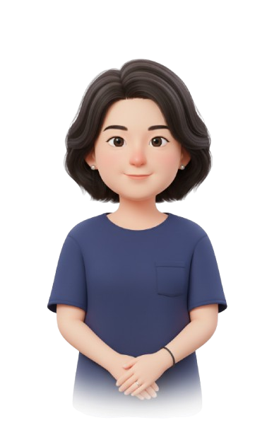

Quest-On
Advisors & Pilots
국내 대학 교수진과 현장에서 함께 검증하고 있습니다.
자문 교수진은 강의 설계, 도메인 평가 기준, 학생 데이터 윤리 영역에서 직접 피드백을 주십니다.


“단순 암기를 넘어 문제 해결에 몰입하게 만드는 변화, AI의 실시간 피드백이 교수 설계의 새로운 영감을 줍니다.”
강현정 교수님

“AI 시대에 꼭 필요한 ‘사고 과정’ 평가의 해답. 공정성과 설명 가능성을 모두 갖춘 혁신적인 플랫폼입니다.”
권효찬 교수님
“기존 시험으로는 불가능했던 ‘추론 과정의 가시화’. Quest-On을 통해 진정한 의미의 평가가 시작되었습니다.”
최인대 교수님
“학생과 교수 모두에게 가치 있는 시도입니다. 평가의 본질에 다시 질문을 던지는 도구입니다.”
장진욱 교수님